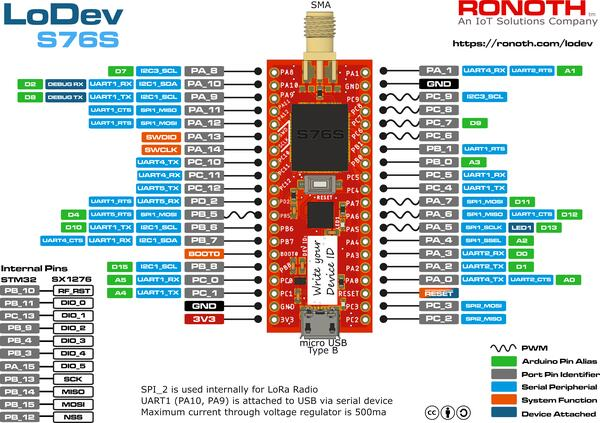

LoDev
概述
Ronoth LoDev 是一块小型开源开发板，搭载 AcSIP 的 AcSIP S76S SiP。full LoDev design details 可在 GitHub 上获取。LoDev 开发板可从 Ronoth 或 CrowdSupply 购买。
S76S 包含一颗 STMicro STM32L073RZ MCU、一个 Semtech SX1276 LoRaWAN 收发器和一个 +20 dBm 功率放大器。详情请参阅 AcSIP S76S Product Information Brief。
Zephyr 应用程序可以使用 ronoth_lodev 配置在这块开发板上运行。
Board design files 可在 GitHub 上获取。
器件资源
内嵌的 STMicro STM32L073RZ 有部分 GPIO 和 SPI2 在内部专用于 LoRaWAN 收发器的操作。专用于该功能的资源列表请参见 internally dedicated ports。
调试
与所有 STM32 处理器一样，编程和调试使用 SWD 端口。可以使用 ST-LINK/V2 适配器配合相应软件（Linux 上为 st-utils 软件包）。
连接器引脚定义
LoDev 有两排排针。两个连接器的 1 号引脚都最靠近板上的 micro-USB 接口，离 RF（天线）接口最远。
从开发板顶面（元件面）看，使 micro-USB 接口位于最近处、RF（天线）接口位于最远处时，CN6 连接器在左侧，CN7 连接器在右侧。
S76S SiP 上的 UART1 连接到一个 USB 转 UART 器件，该器件接在 micro USB 接口上，因此 PA9 和 PA10 通常不能用作 I/O。
开发板上印有便于识别的丝印标注。

CN6 引脚定义
Pin |
函数 |
说明 |
|---|---|---|
1 |
3.3V |
最大输出 500 mA |
2 |
GND |
|
3 |
PC1 |
|
4 |
PC0 |
|
5 |
PB8 |
|
6 |
BOOT0 |
|
7 |
PB7 |
|
8 |
PB6 |
|
9 |
PB5 |
|
10 |
PD2 |
|
11 |
PC12 |
|
12 |
PC11 |
|
13 |
PC10 |
|
14 |
PA14 |
SWCLK |
15 |
PA13 |
SWDIO |
16 |
PA12 |
|
17 |
PA11 |
|
18 |
PA9 |
UART1 的 USB 串口 Tx 驱动此引脚（输入） |
19 |
PA10 |
UART1 的 USB 串口 Rx 由此引脚驱动（输出） |
20 |
PA8 |
CN7 引脚定义
Pin |
函数 |
说明 |
|---|---|---|
1 |
PC2 |
|
2 |
PC3 |
|
3 |
nRESET |
|
4 |
PA0 |
|
5 |
PA2 |
|
6 |
PA3 |
|
7 |
PA4 |
|
8 |
PA5 |
|
9 |
PA6 |
|
10 |
PA7 |
|
11 |
PC4 |
|
12 |
PC5 |
|
13 |
PB0 |
|
14 |
PB1 |
|
15 |
PC6 |
|
16 |
PC7 |
|
17 |
PC8 |
|
18 |
PC9 |
|
19 |
GND |
|
20 |
PA1 |
在 S76S 中用作“RF FEM CPS” |
内部专用端口
引脚名称 |
引脚类型 |
I/O 结构 |
说明 |
函数 |
|---|---|---|---|---|
PA15 |
I/O |
FT |
INTERNAL SX1276 D5 |
|
PB3 |
I/O |
FTf |
INTERNAL SX1276 D4 |
|
PB4 |
I/O |
FTf |
INTERNAL SX1276 D3 |
|
PB9 |
I/O |
FTf |
INTERNAL SX1276 D2 |
|
PB10 |
I/O |
FT |
内部 SX1276 复位 |
|
PB11 |
I/O |
FT |
INTERNAL SX1276 D0 |
|
PB12 |
I/O |
FT |
INTERNAL SX1276 SPI nCS |
|
PB13 |
I/O |
FTf |
INTERNAL SX1276 SPI2_SCK |
|
PB14 |
I/O |
FTf |
INTERNAL SX1276 SPI2_MISO |
|
PB15 |
I/O |
FT |
INTERNAL SX1276 SPI2_MOSI |
|
PC13 |
I/O |
FT |
INTERNAL SX1276 D1 |
参考资料
许可证
本文档版权所有 (c) 2021 Dean Weiten <dmw@weiten.com>
SPDX-License-Identifier: Apache-2.0